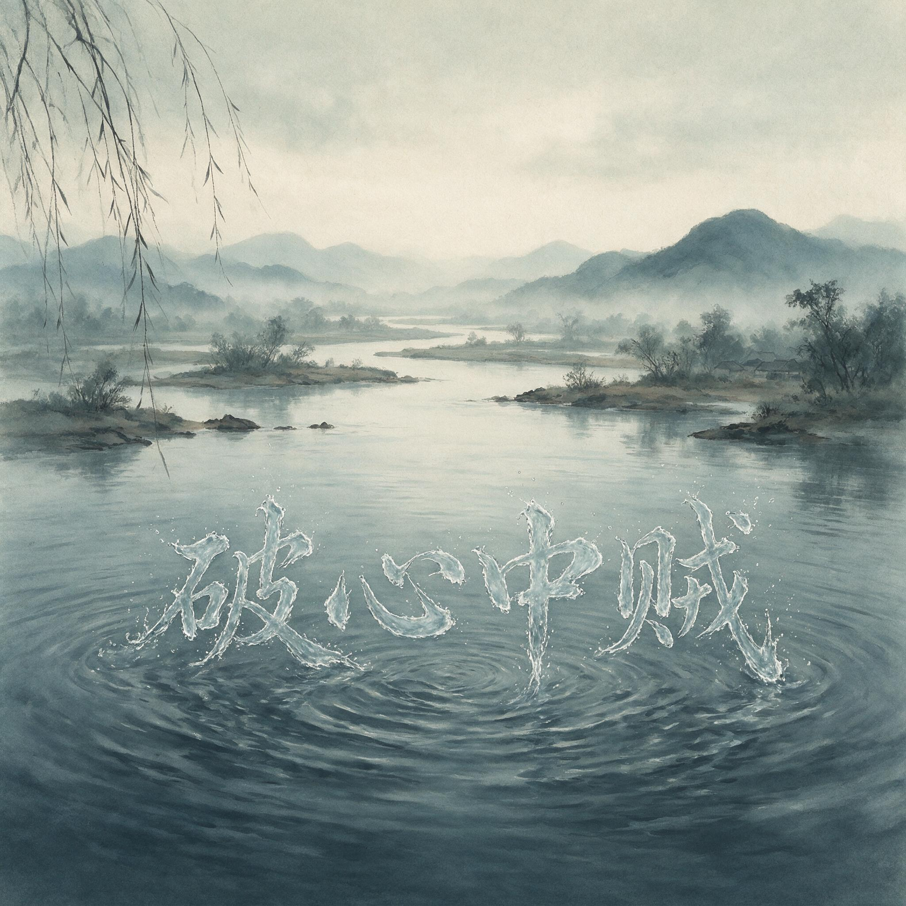

第 25 章
死后的第一场争辩
“都察院会集廷臣，定议其功过。”
这十三个字从紫禁城传出来的时候，王阳明的灵柩还在从江西南安北上浙江余姚的路上。那是一支素白色的归葬队伍，门人弟子沿途设祭，白衣素冠的人群在渡口、驿亭、城门外聚集，焚烧纸钱，诵读祭文

民谣在江南水乡传播的抽象氛围画面
AI 生成插图，非史实影像。
。嘉靖八年十一月，这支队伍在帝国南方的官道上拉出一条长长的白色痕迹，为一位致仕尚书的身份提供着最后的证明。
然而在北京，另一场与哀荣无关的仪式正在启动。吏部尚书桂萼上疏劾奏，列举王阳明擅离职守、学术乖谬等罪状。皇帝没有按惯例将此事发交礼部按例议拟恤典，而是下旨命都察院会集廷臣，定其功过。这道圣旨开启的并非一场寻常的人事追责，而是阳明心学进入制度史的第一场生死判决。此刻距王阳明在江西南安病逝已经将近一年，距他在广西平定思恩、田州之乱不过一年多。
就在这短短一年间，心学在民间完成了从前一阶段书院讲学到更底层传播的转化。那些歌谣不需要识字，不需要经典，不需要师承，只需要记住曲调，记住一两个句子，就能在农人、盐丁、小商贩、落第秀才之间流传。
定义权从士人手中流失，这在前一章已经展开。当那些分散各地的王门传人再度聚首时，他们将首先面临谁有资格定义良知的激烈冲突。但在他们聚首之前，北京的廷议已经抢先一步，替他们提出了一个更尖锐的问题：良知之学，到底是否还能合法存在于大明帝国的版图之内。桂萼的奏疏在现存各本《明实录》中皆有转述，措辞虽互有出入，核心指控却高度一致。
奏疏分作两个层面。一是职务罪名：王阳明在广西平定思恩、田州之后，未待朝命便擅自启程返乡，卒于途中。明代官员离任必须奉有明旨或部文，而王阳明在嘉靖七年十月上疏乞骸骨后，朝廷批复尚未下达，他便已离开南宁。这个程序漏洞给了桂萼足够的把柄。一场病危之下的仓促启程，在弹劾奏疏中被读成蓄意的抗旨行为。记录只到这一步：桂萼将擅离职守列为第一项罪名，奏疏的整体文风是将一次病危之下的启程转化为蔑视朝廷的举动。
奏疏的第二部分则是学术定性。桂萼在此处使用了一组在明代政治语汇中功能极为精确的词语：诋訾先儒、号召门徒、以伪学乱天下。
这些词语并非随意的指责，而是经过精心选择的程序性用语。“诋訾”意味着恶意的攻击而非学术的探讨；“号召”暗示组织化的力量而非个人的思想；“伪学”一词也是直接接续宋代的党禁传统——它曾贴在程颐身上，导致洛学被禁；它曾贴在朱熹身上，导致理学在庆元党禁中整体被打压。桂萼熟谙这一话语传统，他知道一旦伪学的定性被皇帝接受，接下来必然是禁学、禁书、禁讲会、禁门人入仕的一整套连锁反应。
这份奏疏的功能不是陈述事实，而是启动程序。皇帝的反应来得很快。圣旨只有十三个字，但“会集廷臣”四个字的分量远超字面。
在明代制度中，大臣身故后的恤典——赠官、赐谥、荫子——通常由礼部按例议拟，皇帝照准即可。召集六部、都察院、通政司、大理寺以及翰林院、詹事府等机构会集议事，意味着将一个常规的人事善后案例提升为需要朝廷集体表态的政治事件。都察院被指定为会集的核心机构，这一设计本身就暗示了事件的实质：这不仅仅是功过评定，也是一场思想审查。
都察院的日常职责是监察百官风纪，而这一次，它被要求监管的是思想本身。廷议的具体日期在现存《明实录》中没有明确记载。能够确认的是，桂萼上疏在十一月，圣旨下达在十一月，廷议的筹备与举行在十一月下旬至十二月之间。参与廷议的官员名单同样没有完整保存，但按照明代会集廷臣的制度惯例，六部堂上官、都御史、通政使、大理寺卿以及翰林院掌院学士、詹事府詹事等人均应在列，再加上各自衙门的属官，实际在场者可能多达数十人。这些人围坐在都察院的议事厅中，围绕一个死者的功过展开辩论。
辩论的焦点从一开始就偏离了人事功过本身。兵部的立场最为清晰。王阳明在嘉靖七年平定思恩、田州之乱，军功有捷报、有战俘、有地方官的勘合为证。兵部主事和职方司郎中在廷议中出示了广西巡抚衙门和两广总督衙门的奏报原文，其中详细记录了王阳明到任后的军事部署：招抚为主、进剿为辅，在短时间内瓦解了卢苏、王受的叛军，战后又奏请设立流官州县以巩固治理。
这些奏报在嘉靖七年已经过兵部复核，当时并未发现虚冒情弊。兵部据此主张，王阳明的军功符合恤典条件，至少应追赠官职、给予祭葬。
礼部的反对意见则是从另一个维度切入的。礼部仪制司和祠祭司的官员指出，王阳明的学术著作中存在多处不师先儒的表述。他们特别提起了王阳明对朱熹《大学章句》的批评，认为这种批评已经超出了正常的学术商榷范围，构成了对钦定经典的挑战。明代自永乐年间颁布《四书五经大全》以来，朱熹的注疏就是科举考试的标准答案。任何对这一标准答案的系统性质疑，在制度层面都意味着对科举取士体系的动摇。礼部的逻辑因此变得简单而有力：一个挑战科举标准的人，不配享受国家恤典。
兵部以事实为据，礼部以定性为据。这两种论证方式在廷议中形成尖锐的对立，但这种对立本身并不对称。兵部面对的是一个可以回答的问题——王阳明有没有立下功勋？这个问题有奏报可以核查，有战果可以验证，因此兵部的立场在事实层面无可辩驳。
礼部面对的是一个无法回答的问题——王阳明的学说是否在瓦解帝国的思想根基？这个问题没有标准答案，因此礼部的立场无法被事实所反驳。在帝国的议事程序中，无法回答的问题往往比可以回答的问题更沉重，因为无法回答意味着无法被证伪，无法被证伪意味着它可以被无限放大。
翰林院和詹事府的词林官员占据了廷议中的第三种立场。他们并非全数反对王阳明，其中一部分人本身就是王门弟子，在廷议中极力为师辩护。但另一部分人则持批评态度，他们认为王阳明的致良知之说导致后学空疏不实。这一批评的实质是一个制度问题：如果每个人都可以直接诉诸内心的良知，那么经典注疏、师承传授、科举考试这一整套知识传承和人才选拔制度还有什么存在的理由？
致良知把真理的最终来源从外部文本移回内心，这在逻辑上消解了官学体系赖以存在的知识垄断。词林官员未必人人能够清晰表述这个逻辑，但他们作为科举制度的直接受益者和守护者，本能地感觉到了威胁。这三股力量在议事厅中相互交织。
兵部话语务实，礼部话语正统，词林话语复杂。但在他们之外，还有一种声音在廷议中反复出现，它不来自某一个具体的部门，却贯穿于所有反对王阳明的发言之中。这个声音谈论的不是王阳明的军功，不是他的著述，而是他的门徒网络。
礼部官员列举了王门弟子在全国各地建立书院、举办讲会的情况：浙江的稽山书院、江西的濂溪书院、南直隶的书院、湖广的岳麓书院，都有王门弟子在讲学。这些书院不像官学那样受提学官的直接管辖，讲学内容也不受科举大纲的约束。在书院中，布衣平民可以和致仕尚书坐而论道，商贾可以和举人辩论经义。这种知识传播的扁平化结构，在习惯了等级化知识管理的帝国官僚眼中，本身就是一种挑衅。
更让廷臣不安的，是那些已经渗透进民间日常生活的传播形式。在江西、浙江、南直隶的乡村中，王阳明的学说正在以歌谣、谚语、善书的形式扩散。这些形式不需要识字，不需要经典，不需要师承，任何人听过一遍就能跟着传唱。
这种扩散的速度和广度，已经远远超出了书院讲学的范围，正在形成一个独立于官学体系之外的平行教化网络。廷议中确有官员明确提出了这个担忧——如果不对王阳明的学说加以限制，不出十年，天下士子将只知道有王氏之学，而不知道有程朱理学。这个判断是否真的以这样的措辞被说出过，现存记录无法逐字证实。但它在廷议的气氛中是清晰存在的，它不是某个人的声音，而是整个制度面对异己力量时发出的本能预警。
兵部试图以军功事实来对冲这种意识形态焦虑，但收效甚微。因为这场廷议的本质不是事实认定，而是性质定性。王阳明有没有平定广西的叛乱？有。这个事实在廷议中无人否认。
但他的学说是不是在瓦解帝国的思想根基？这个问题一旦被提出，军功的事实分量就急剧下降。在帝国的逻辑中，一场边境平叛的胜利是可以被替代的——换一个巡抚也许也能平定——但一套挑战科举标准的学说如果蔓延开来，其后果是不可逆的。这个逻辑在廷议中虽然没有被明确表述，但它决定了最终的投票走向。
廷议的结论在《明实录》中留下了简短的记载。记录的措辞大意是：廷臣议定，王守仁事不师古，言不称师，私立门户，号召生徒，宜禁其学；其广西功次，另行核实。这个结论包含了两个部分：第一部分是学术定性，第二部分是恤典悬置。
“私立门户”四个字成为整个决议的核心。在明代政治语汇中，门户一词具有强烈的负面含义，它暗示结党、营私、排斥异己。将王阳明的学术传承定性为私立门户，意味着朝廷不再将其视为儒学内部的一个学派，而是将其视为可能威胁政治稳定的组织化力量。
这个定性的法律后果在随后的几年中逐步显现。嘉靖九年，礼部正式下文禁止各地为王阳明建立专祠。嘉靖十年，提学官开始清查各书院中讲授心学的山长。嘉靖十六年，朝廷颁布了更明确的禁学令，将伪学的标签正式写入官方文件。
但所有这些后果都在嘉靖八年十一月的那场廷议中已经定型。廷议不是起点，而是定调。桂萼挑起，皇帝表态，廷议确认，此后的一切都只是执行。廷议决议的措辞是宜禁其学，而不是宜禁其书。
这一字之差意味着朝廷的打击也就是说，朝廷要切断的不是文本本身，而是文本的传播方式和组织载体——书院、讲会、门人网络。这种区别并非措辞上的偶然松弛。明代帝国的实务者早就从历代禁书史中提炼出一个经验：书禁不绝，刻板可以藏匿，手抄可以流转，但若切断讲学与授受的管道，学问就失去繁衍的温床。因此，决议写的是禁其学，而非焚其书。这是一个经过盘算的选择，它试图用最小的制度成本，阻止心学在身份与资格层面继续复制自身。
然而，这个选择从一开始就内含一个难以弥合的缺口。它攻击门人网络，却无法覆盖民间传唱；它禁止书院讲会，却无法禁止歌谣在灶台边被低声重复。早在廷议之前，王学已经在江西、浙江的乡村中改变了面貌。
歌谣不需要书院，不需要山长，不需要任何列入官方视野的组织形式。它只在喉咙和耳朵之间传递。朝廷可以查封一个书院，可以遣散一批弟子，却无法命令一个农妇不哼唱一首记住的调子。这个缺口，当时没有被任何廷臣充分认识。
他们正在为成功定性而松一口气，并未意识到禁令所无法触及的，恰恰是心学已经完成变异的部分。
廷议之后，王门弟子内部开始出现公开的分化。消息传到各地的时间不一，反应却集中在同一个问题上：既然朝廷已给出定性，吾辈是争还是隐？邹守益、欧阳德等人主张经由正常途径上疏申诉，以军功事实和学术正统性为据，请求朝廷重新审议恤典和禁学决议。他们的判断是，若此时全体退出朝廷视线，无异于坐实桂萼的指控，让伪学的标签永远无法洗脱。
王艮及其泰州同道则持相反态度。他们认为事已至此，逐条上疏不过是在一个已经预设立场的程序中徒劳消耗。与其在京城争夺一个死者的封谥，不如把力量转入乡里。王艮开始更多地对灶丁、盐夫讲学，他的门人也加速将师说改编为歌谣和劝善文字。
第三种态度以聂豹、罗洪先等人为典型：不公开抗争，不彻底转入民间，而是在私人场合默传师说，既避祸，又不断绝。这几种反应并非突然产生，但廷议的决议将它们从模糊的倾向变成了明确的路线差异。
兵部职方司郎中在廷议中展开广西军功的论述时，并没有从王阳明的个人才能讲起。他先让人把嘉靖七年四月到七月间的塘报和勘合文书按时间顺序铺陈在案上。那些文书纸张厚薄不一，有些边角已经磨损，但每一份都盖着两广总督衙门和广西巡抚衙门的朱印。他逐份念出日期、地点、兵力调动和战果数字，声音平稳，像在核对一笔已经结清的账目。
思恩、田州之乱起于土官卢苏、王受对改土归流政策的反抗，叛军一度攻占府城，切断左右江粮道，威胁南宁。王阳明到任后没有立即调集大军进剿，而是先派使者入营招抚，同时密令周边卫所收紧隘口，切断叛军获得盐铁补给的通道。卢苏、王受在粮尽援绝的情况下率众出降，前后不过两月。随后王阳明又奏请将田州府降为田宁府，设立流官，同时保留部分土官世袭以安其心。
兵部强调，这套处置方案在嘉靖七年已经过兵科给事中复核，当时无一人提出异议。广西的捷报是实打实呈到御前的，不是王阳明自己写给朝廷的夸饰之词。
礼部仪制司郎中在兵部铺陈完军功之后，并没有直接反驳那些塘报的真实性。他承认广西平叛确有功绩，但随即把话头转向另一个方向。他从袖中取出一册已经翻得卷了边的《传习录》，翻到其中一段，念了出来。那段话是王阳明对朱熹“即物穷理”说的批评，大意是天下之物无穷无尽，若一一格去，终其一生也格不尽，不如反求诸心，致吾心之良知于事事物物。
礼部官员念完之后合上书册，环视在座诸臣，说：此等言语若只在私人书斋中自说自话，原也无可厚非，但若被天下士子奉为圭臬，则《四书五经大全》置于何地？科举取士以朱子传注为功令，若人人皆可反求诸心，则考官以何标准取士？士子以何标准应考？
这一串问句在议事厅中造成了短暂的沉默。兵部的人没有接话，因为这些问题已经超出了他们的职掌范围。翰林院掌院学士微微点头，似乎早就料到礼部会从这个角度切入。
詹事府詹事在礼部发言之后补充了一个细节。他说，近年来各省乡试的程文中已经出现了大量引用“致良知”“知行合一”等说法的卷子，有些考生甚至直接以王阳明的话来反驳朱子注疏。提学官对此束手无策，因为朝廷并未明文禁止这些用语，考官也没有统一的去取标准。结果就是，同样一份卷子，在这个省可能被取中，在另一个省可能被黜落。科举的公平性正在被这种学术混乱所侵蚀。
詹事府詹事的发言没有直接攻击王阳明的人格，也没有否定他的军功，但他把问题引向了一个更具操作性的层面：心学的扩散已经影响到了帝国最重要的人才选拔程序。这个角度比礼部的定性指控更让在座诸臣感到切肤之痛。科举是帝国官僚体系的入口，如果这个入口的标准被动摇，整个文官集团的自我复制机制就会出问题。兵部的人听到这里，脸色已经有些难看。他们知道，军功的事实再扎实，也压不住这种关于制度根基的焦虑。
通政使在廷议中扮演了一个微妙的角色。他既没有像兵部那样为军功辩护，也没有像礼部那样直接指控学术异端，而是反复追问一个程序性问题：王阳明的门人弟子在各地建立书院、举办讲会，是否经过地方官批准？通政司掌握着天下章奏的出入，通政使对各地官员上报的民情动态比在座任何人都更敏感。
他列举了几个例子：江西吉安府有王门弟子聚众讲学，每次会讲人数多达数百，地方官不敢禁止，因为参与者中有不少是致仕官员和举人监生。浙江绍兴府稽山书院在阳明去世后仍定期举办会讲，主讲者并非朝廷命官，却能在地方上调动大量人力物力。通政使的问题是：这些活动在制度上属于什么性质？
它们是私人学术交流，还是未经批准的聚众结社？这个问题一经提出，议事厅中的气氛又紧了一层。因为“结社”这个词在明代政治语汇中同样是一个危险信号。它暗示着一种独立于官府控制之外的组织形态。通政使没有直接说王门弟子结社，但他把这个问题摆到了桌面上，让在座诸臣自己去联想。
都察院左都御史作为廷议的主持者，在各方发言之后做了一个总结性的陈述。他没有直接表态支持哪一方，而是把问题重新拉回到皇帝的圣旨上。他说，皇上命都察院会集廷臣定议功过，这个“功过”二字本身就包含了两个层面的意思。功，是事功，是广西平叛的军功；过，是学术，是王学对世道人心的影响。
二者不能混为一谈，也不能相互抵消。若只论军功，王守仁确有可恤之处；若只论学术，则其流弊亦不可不防。左都御史的这番话看似公允，实则已经为廷议的最终走向定下了基调。他没有说功大于过，也没有说过大于功，而是说二者不能相互抵消。
这意味着朝廷可以在承认军功的同时，仍然对学术进行限制。兵部的人听出了这个意思，但他们无法反驳，因为左都御史的表述在程序上无可挑剔。他既没有否认军功，也没有支持恤典，而是把两个问题分开处理。这种处理方式为最终的决议提供了一个各方都能接受的框架：军功可以另行核实，学术必须先行禁止。
户部右侍郎在廷议中提出了一个此前无人触及的角度。他说，王阳明在江西、浙江等地推行乡约、保甲，这些制度本身并无问题，甚至可以说是良法。
但问题在于，王阳明将乡约与讲学结合在一起，使乡约不再只是治安联防的组织，而变成了传播心学教义的场所。在赣南的南赣乡约中，约长、约副、约正等职务由王门弟子担任，约众在每月朔望集会时，除了处理纠纷、劝善惩恶之外，还要听讲阳明之学。户部右侍郎指出，这种将行政组织与学术传播合为一体的做法，实际上是在官府的行政体系之外另建了一套教化体系。
这套体系不经过朝廷任命，不经过吏部铨选，却能对基层民众产生直接的影响力。户部关心的是赋税和户口，但户部右侍郎的发言表明，他已经意识到了心学传播对基层控制力的潜在威胁。这个角度比礼部的学术定性更让在座的地方官感到不安。因为在他们的治下，乡约和保甲是维持地方秩序的重要工具，如果这些工具被心学渗透，地方官对基层的控制力就会被架空。
大理寺卿在廷议接近尾声时发表了一个简短的看法。他说，朝廷议恤典，向来只问功过，不问学术。但这一次，学术本身已经构成了问题。一个学者的学说如果已经被认定为伪学，那么他的功绩是否还能按照正常程序给予恤典？这个问题涉及法理上的先例。
大理寺卿指出，宋代庆元党禁时，朱熹被列为伪学逆党，朝廷并未因其学术成就而给予特殊对待。明代洪武年间，朱元璋也曾对某些学者的著作进行过禁毁，其本人在死后也未获得应有的恤典。大理寺卿的发言为礼部的立场提供了历史依据。他的逻辑是：学术定性在先，功过评定在后。一旦伪学的标签被贴上，军功的事实就必须让位于学术的定性。
这个逻辑在法理上并非无懈可击，但在廷议的氛围中却具有很强的说服力。因为廷臣们最关心的不是王阳明个人的身后哀荣，而是朝廷在处理类似事件时应该遵循什么样的先例。如果这一次因为军功而给予恤典，那么今后再有学者挑战官学正统，朝廷是否也要因为其某些功绩而网开一面？这个先例一旦开启，后患无穷。
廷议的记录在最后一段中出现了“宜禁其学”四个字。这四个字不是任何一位廷臣的原话，而是都察院在汇总各方意见后拟定的结论性措辞。从程序上看，这个结论需要经过内阁票拟、皇帝批红才能生效。
但在实际操作中，廷议的结论一旦形成，皇帝很少会推翻。因为廷议本身就是皇帝授意召开的，廷臣们的意见在某种程度上就是皇帝想要听到的意见。桂萼在廷议结束后又上了一道奏疏，催促皇帝尽快批准禁学决议。他在奏疏中特别提到，王门弟子在南方各地的讲学活动并未因王阳明之死而有所收敛，反而有愈演愈烈之势。
若朝廷不早做决断，恐怕将来难以收拾。桂萼的这道奏疏在《明实录》中只留下了一句话的记载，但这句话的分量很重。它把廷议的学术定性进一步推向了一个紧迫的政治行动。桂萼不是在讨论学术，他是在要求皇帝立即采取行动。而皇帝也确实没有拖延太久。嘉靖八年十二月，禁学决议正式下发，礼部开始着手制定具体的执行细则。
然而，决议下发的速度并没有跟上心学扩散的速度。
最激烈的分歧不在王艮与邹守益之间，而在关于“正统”的认定上。禁令迫使王门必须对外形成统一的说辞，否则每一个弟子都可能暴露在不同的风险之中。
然而阳明晚年留下的教诲并不提供这样的统一性。天泉证道一夜，他对钱德洪和王畿分别说出了不同侧重的教义，两段话之间的张力没有解决，反而被奉为不同的法门。阳明的“良知”说在理论上坚持人人自求诸心，拒绝师门外的任何标准答案，这一逻辑必然导致后学无法形成一个不可置疑的正统。
但在禁令的压力下，生存的需要又要求王门有一个核心、一个声音、一套可以公开宣讲的定本。理论指向弥散，现实要求统一。这个矛盾没有解决方案，只能被反复拉扯。这道禁令本是为打击外部传播而设，却把内部的阐释裂变推到了台前。
它让每一个王门弟子都必须回答两个问题：你信什么？你敢不敢公开信？答案因人而异，裂痕由此加深。兵部与礼部的争论结束了，但关于良知定义权的争夺才刚刚开始。这个争夺将在随后的书院复建、讲学再兴和学派分裂中不断重演，从未真正停止。
而它所争夺的那个东西，已经不在死者的掌握之中，甚至也不在任何活着的人手中。廷议的决议躺在兵部和礼部的案卷里，成为一道制度疤痕。桂萼的奏疏和那份简短的廷臣议复被誊抄、传递、归档，在皇帝那里批准，在内阁那里备案，在各省的提学衙门那里变成具体的清查动作。
但它无法抵达的地方，是那些在夜晚的村庄里偶尔响起的、断断续续的歌谣。歌谣里没有桂萼的奏疏，没有都察院的议事厅，没有宜禁其学的公文用语。它只有一两句关于心、关于乐、关于私欲的短语，被一个老妪或一个行脚货郎含糊地唱过。嘉靖八年的冬天，禁令从京城出发，快马加鞭地传向南方。
它到达很多州府，却始终没有追上那些歌谣已经走过的路。王阳明在歌谣里变成了另一个人，一个不再需要朝廷承认的人。而朝廷以为它在评定一个死者的功过，实际上它在同一个活的思想谈判边界。这个谈判没有结束，它只是换了一种形式继续。日常是不可禁止的。而在日常的缝隙中，良知的问题已被抛给每一个听歌的人。